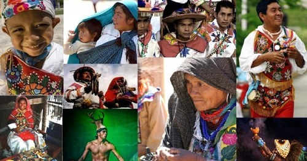

Comunidades y Saberes Ancestrales
Las comunidades rurales e indígenas desempeñan un papel vital en la conservación del medio ambiente y la promoción de la agricultura sostenible. Sus conocimientos ancestrales, transmitidos de generación en generación, son fundamentales para el manejo adecuado de los recursos naturales.
Conocimientos tradicionales
- Uso medicinal y alimenticio de plantas locales.
- Métodos naturales de conservación del suelo y el agua.
- Sistemas agrícolas basados en la biodiversidad (como milpas y terrazas).
- Calendarios agrícolas basados en fenómenos naturales.
Protección de culturas vivas
Preservar estos saberes no solo fortalece la agricultura sostenible, sino que también protege la identidad cultural y los derechos de estas comunidades. Su participación activa es esencial para enfrentar los desafíos ambientales actuales.
